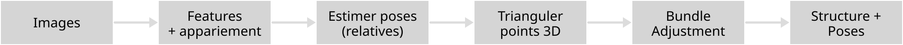

Synthèse d’Images par Rendu Inverse
CM3: A la surface de l’eau
Si on peut estimer caméras et points 3D… comment reconstruire une scène complète ?
images structure surface
Plan du cours
- Structure from Motion : reconstruire caméras et structure
- Bundle Adjustment : rendre la reconstruction cohérente
- De la structure à la surface
- Comment réussir une photogrammétrie
👉 Objectif : comprendre comment un ensemble d’images peut être transformé en un modèle 3D exploitable (nuage dense, surface, mesh).
Fil directeur (2D → 3D → continu)

Et on essayera de faire chacun notre propre numérisation !
BLOC 1
Triangulation : intuition
Si on connaît deux caméras et une correspondance :
- chaque pixel définit un rayon
- l’intersection (approx.) donne un point 3D
👉 “Point 3D” = compromis qui explique au mieux plusieurs observations 2D.
Ce que nous venons de voir
Cette approche s’appelle :
Structure from Motion
Reconstruction multi-vues : pipeline SfM

Interprétation
- On part d’images
- On détecte des points caractéristiques
- On trouve leurs correspondances entre images
- On estime la position relative des caméras
- On triangule les points dans l’espace
- On optimise tout avec le bundle adjustment
Résultat : une structure 3D et les poses des caméras
Bundle Adjustment : ce que ça fait
On ajuste simultanément :
- les poses des caméras
- les points 3D
pour minimiser l’erreur de reprojection.
👉 Photogrammétrie = optimisation : trouver la structure qui “rend” au mieux les images observées.
Ce qui est reconstruit… et ce qui ne l’est pas
Reconstruit :
- une structure (souvent un nuage de points)
- des poses caméra
- parfois des intrinsics (auto-calibration)
Pas reconstruit (dans ce cours) :
- matériaux / illumination / BRDF
- “vérité” géométrique parfaite partout
- zones jamais observées
Ambiguïtés fondamentales
Même avec une bonne reprojection, il reste :
- échelle (sans référence métrique)
- symétries / répétitions (texture ambiguë)
- zones peu observées (faible recouvrement)
👉 Une reconstruction photogrammétrique est une solution compatible, pas une vérité unique.
Ce que guide la réussite en pratique
Hypothèses qui aident :
- scène rigide
- recouvrement entre images
- texture suffisante
- variations de point de vue raisonnables
Hypothèses qui cassent :
- objets mobiles
- surfaces uniformes
- reflets / transparence
- faible recouvrement
BLOC 2
Ce que la photogrammétrie fournit (et pas plus)
Rendu inverse 3D : rappel
Photogrammétrie = trouver une représentation minimale compatible avec les images :
- poses caméra
- points 3D (structure)
👉 C’est suffisant pour reprojeter, pas forcément pour bien rendre.
Nuage de points : nature de la représentation
Un nuage de points, c’est :
- discret
- non connecté
- dépendant du point de vue d’observation
👉 Excellent pour la géométrie globale, faible pour la continuité visuelle.
Question clé du CM3
Pourquoi une reconstruction géométriquement correcte peut-elle produire
des images visuellement très pauvres ?
Réponse courte : la représentation n’est pas adaptée au rendu image.
BLOC 2
Rendu naïf à partir d’un nuage de points
Projection directe des points
Principe :
- projeter chaque point 3D dans la caméra virtuelle
- colorer le pixel correspondant
👉 C’est le “baseline” le plus simple.
Artefacts typiques du rendu par points
- trous (échantillonnage insuffisant)
- aliasing
- bruit
- forte dépendance au point de vue
Ces artefacts sont structurels, pas des bugs.
Pourquoi ces artefacts apparaissent ?
Parce que :
- les points ne couvrent pas continûment l’écran
- la densité dépend de la vue d’origine
- il n’y a aucune notion de surface
👉 Le nuage est une représentation “objet”, pas “image”.
Test mental
Si je change légèrement la caméra :
- certains points disparaissent
- d’autres apparaissent
- la densité écran change brutalement
👉 Mauvaise stabilité visuelle.
Conclusion
À retenir (CM3)
- Un nuage de points est suffisant pour la géométrie, pas pour le rendu.
- Le rendu par points révèle des artefacts structurels.
- Les splats / surfels améliorent la continuité écran au prix d’un compromis.
- Le réalisme dépend d’abord de la représentation, pas seulement des données.
- Les méthodes modernes visent des représentations continues et adaptées au rendu.
Connexion directe avec le TP3
Dans le TP3, vous allez comparer :
- projection de nuage de points
- rendu par splats / surfels
- Gaussian Splatting (fourni)
👉 Même données, rendus très différents : analysez pourquoi.
Préparer CM4
Question de sortie :
Pourquoi optimiser une représentation pour le rendu plutôt que pour la seule géométrie ?
Réponse attendue : parce que le critère final est l’image synthétisée, pas la fidélité géométrique locale.
Comment passer de plusieurs images à une première reconstruction 3D
complète?